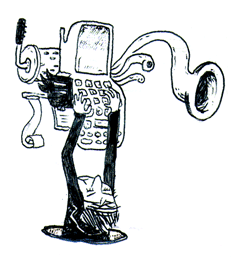

Hackety Org #

Thankyou for enjoying The RedHanded Adventure Show. We have had the nth batmans galore!! I adore you. I will never forget you. I will especially not forget you if you follow me to Hackety Org.
Is this the first time a Ruby blog has closed?? No matter. There will three more by supper. I will enjoy those blogs as a plainclothes civilian. Tallyho.
evan
:(
willcodeforfoo
I hope you’re all happy you won’t see anymore pixels of code.
Meanies! :(
rluv
I think _why found some new friends. So long to the old ones. Maybe we never were?
roberthahn
:(
so. um. what about those nifty projects you did? Like Camping, Hpricot, etc? Will they continue to be nursed and nurtured? Will news of their growings-up be announced at Hackety??
bpo
:(
why
rluv: We’re all friends on this lush, fertile planet!! I’m just trying a slightly different topic.
roberthahn: I’ll announce them on Ruby-Talk. And: they all have mailing lists and RSS feeds as well. And there are a wealth of Ruby blogs chuggin away day after day after day after day!!
LninYo
first!
evan
why, why, why, why, why
On a related note: Buffalo buffalo Buffalo buffalo buffalo buffalo Buffalo buffalo
psmith
So long, why, and thanks for the fi$@#&& %$! &JHGFDblurg
lwu
fare thee wellll!
why
psmith: You’re welcome for all the fi$@#&& %$! &JHGFDblurg
gnufied
how about grown kids like me who run linux boxen?
halrlee
You mean I’m going to have to go somewhere else to listen to you talk about something else. Not that I have ever heard your actual voice nor do I listen as I mostly peruse.
ok…..
Btw someone is really watching you Check out the sliverlight DLR Console
Can you say tryPython..
double
Rails killed him. But a stronger Why rises from the ashes, into the clouds of longing smoke! Oh yeah!
defunkt
:(
:D
To the stars!
atmos
\o/
|
/ \
wilig
why we must say goodbye, and thanks for the nuts.
webs
:’(
jes5199
man, this is the only ruby blog I bother to read. oh well.
daniel
RedHanded was what made me red handed. And it was the best place to stretch my mind just a little bit more.
Thanks for everything, _why!
DrNic
We’ll be loitering here forever in case you pop back in to say hi.
beppu
^I’ll loiter with you.
Douglas F Shearer
Meh!
Images broken in Hackety RSS feed btw.
ozone
Thanks for everything. I’m sad to see RedHanded go… Long live Hackety!
Bil Kleb
godspeed
Billy Kleb
Can we have one last?
Pretty please? (with sugar on top)
chris2
:((
Sean Braithwaite
Thanks for all the seizures and head-scratching.Godspeed You! Black Emperor.
lifo
That’s an utter sin _why! You cannot leave us checking your blog forever and getting disappointed always!! No you cant!
cdcarter
You made me understand ruby, you made me go crazy trying grok the camping source, you made me feel smart when I knew what a bit of code on this blog did. We are going to miss you _why! Hackety.org looks like it will be fun, knowing it’s not all HH all the time. But nothing says Ruby in the English language like RedHanded.
TGoddard
:) <
-For providing my favourite blog for the last year :( <-That it has to endwhy
Douglas F S : Oh no blam!!
:( <= for the people who just subscribed to this blog yesterday.
Klondike
Long live Redhanded. May I suggest making another closing post, or perhaps a post on Hackety instead, linking to the “Best of Redhanded”?
Like the time that guy smacked you in the face about being what’s wrong with Ruby, or that time you held code out of reach of the lazy and those with eyesight, or that time you vacuumed all of Greenland for them.
Klondike
Oh and of course: 37Cymbals
Zed
Man, this makes me kind of sad.
Colin
In the parlance of our times, wtf?
Rob
Leaving will kill the whole Ruby community; I strongly suggest you rethink this position, immediately.
whoisjake
thanks for all the fish.
jerrett
Hackety! :D
rcorsaro
_why is a bowl of soup…. :(
sporkmonger
:( !
Zorbid
RedHanded was great, can’t wait to read Hackety :-)
lwu
I have set us up a memorial tumblelog here:
redhanded.tumblr.com
Please log-in and leave your fondest memories!
ozten
Thanks for all the giggles and great ideas!
Nicholas Wright
Wow I’m totally crying. :’(
When hobix starts working with anything besides 1.8.4 maybe we’ll have a spur of other weird and interesting Ruby specific blogs.
My feed reader is going to be sad for days.
k9
Every time i type an “h” in my google search box thing, and “hobix” is suggested…well…those will be the hard times.
I may have to Clear Private Data to get over this one.
Ratchetcat
Dear _why, you are my hero. You came from nowhere to turn on the light and knock over all the chairs: Like an exotic ambulatory pasta, only dressed in a cape and with a suspiciously long nose. I’ll follow you anywhere—particularly if anywhere has many lots of yaminals. You betcha.
crayz
“I will never forget you, _why. MEMORY ERASED ”
kenp
truly, the end of an era. redhanded will be mourned.
loincloth
Thanks, _why!
c3
your latest forum post doesn’t accept comments. bah.
why
Egads.
martinS
Thanks for for the ride – see you on the Hackety side
tee
At least I finally got to get that vending machine that dispenses slippers.
Thanks, _why.
deadbeef
why, you own me a muffin :(
Danno
To the greatest blog in the history of not just Ruby programming, but man kind itself!
cheers
God
_why, I’m revoking your Hell-staying privileges (you will no longer get to spend quality time with Lucrezia Borgia) and sending you to eternal boredom in Heaven with Mother Teresa. You might want to reconsider this decision!
mcdtracy
No more chunky… chunky (what was it?)... (don’t tell me…) chunky… damn.
FYI : There is life after deleting a blog. Esp for the deletee. It’s the reader that must cope with this act of performance art. Redhanded lives in our minds. Our chunky minds.
Peter Cooper
Sad because I’ll miss Redhanded, but not sad because I know your time will certainly not go to waste on Hackety, and I’m guessing this is your new calling. If so, I think it will have a really big impact, so if the death of Redhanded leads to insane growth of Hackety, I’m happy! Thanks for the mammaries!
Dan
Um, Is it possible that you are unaware that ‘Tallyho!’ (with or without the exclamation point) is a FOX HUNTING CALL ??? H-ety H sure seems to be a fox-friendly place, but should we be worried that our bacon (chunky and otherwise) could be at risk? Could this be a trap?
Yes, yes, we’ll follow you pied piper, because we love you and, quite apart from that, we’re pathetic. I’ve sent my kids out into the dismal world of ‘programming’ to navigate themselves, and the three older ones (now 8, 11, 13) have each chosen a different path. I think they’ll breeze through HH and maybe just fall back in love with ruby!
I’ll let you know.
Peace, godspeed, farewell, and see you on the other side!
Floyd
Why The Lucky Stiff, you have my emphatic support. Artists must grow to stay relevant! Let popular demand tempt you not! Also sneaking Ruby through the system doesn’t require your caliber in 2007, sneaking code past the business interests is a far more noble and challenging goal.
Barak
Goodbye and good luck, it was great reading RedHanded – one of the reasons I like Ruby.
Poopsteak
We will miss you
tilman
:(
Noho
Why, I would still very much like to see SuperRedCloth continued, especially with hard_breaks and filter_html features! Even if you release it as an animated finger-painted 120MB gif file!
Thank you for everything you’ve done for the ruby community!
JeanHuguesRobert
Question answered I presume. Congrats.
Ippy
More power to you, sir.
zem
and we were singing bye, bye, mr redhanded why…
Aquila
Bye. I Will sure miss this blog.
Jeff
Thanks so much for this site, why.
Maraby
We must always be inspired CONgrats my friend you are An inspiration to us all the spirit you created will blOOm as it has blOOmed but with different mouths and mice SO Shall we be content - ever happy for you & with you
riffraff
ruby-internet just got less interesting, but the rest just got a lot better :)
Thanks for all the fish from the emerald times.
anon++
So, what is going to happen with Camping? I am actually using it and it is great, but I would like to know one way or another if it is going to be updated or left as-is (if so I might as well move to something else now).
lb
I really won’t miss the seizure-inducing pixel spew. Everything else, though, I will. ; ;
peace
why the mad genius. I never understood half of what you said/coded/drew/sang/scribbled… but still it was well worth it
sadf
sdfasdf
rosejn
I think this is a life first, maybe something people never could have experienced before. Feeling a sad sense of separation from the closing of a blog.
The original programmer rock star. Thanks for the educational bits, and I hope you keep on keepin’ on…
marco
this really makes my sad :´( i will miss this blog…
adam
This blog was awesome. Maybe one day it will return.
ornament
:(
manveru
Does that mean that ruby has grown up now and we are doomed to eternal boredom?
okami
;_;
xolox
):
<|:{
Hey _why: if you’re still around… What if you bequeath redhanded.hobix.org to a group of us Rubyists out here who could continue the tradition? A friendly takeover if you will.
...or should we try for a hostile takeover?
tirins.play
Die Mutter hat’s verboten ! Miau! Mio! Miau! Mio!